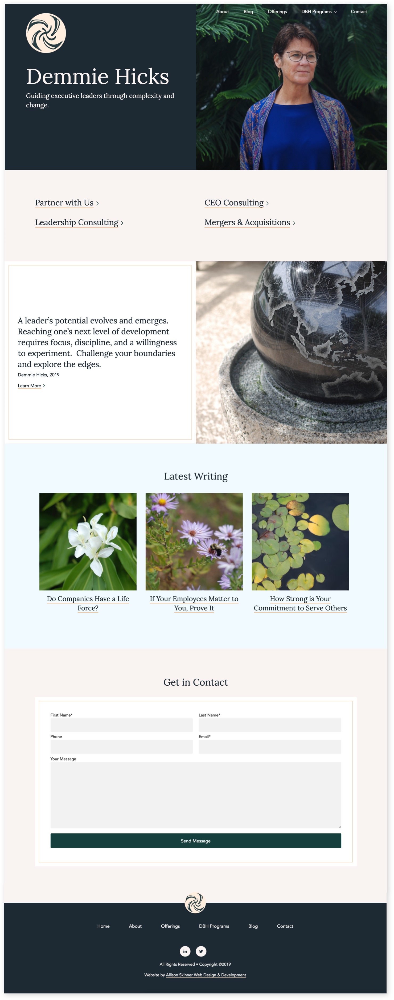
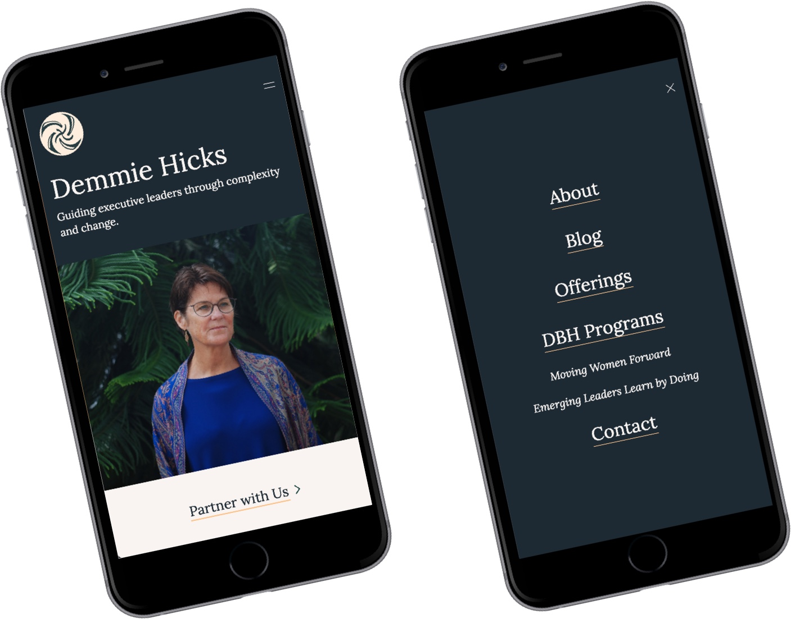
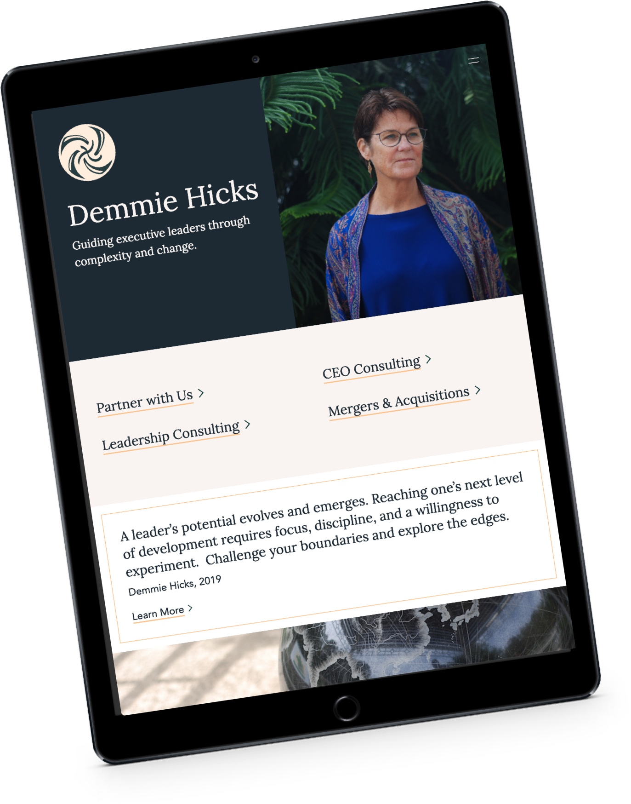
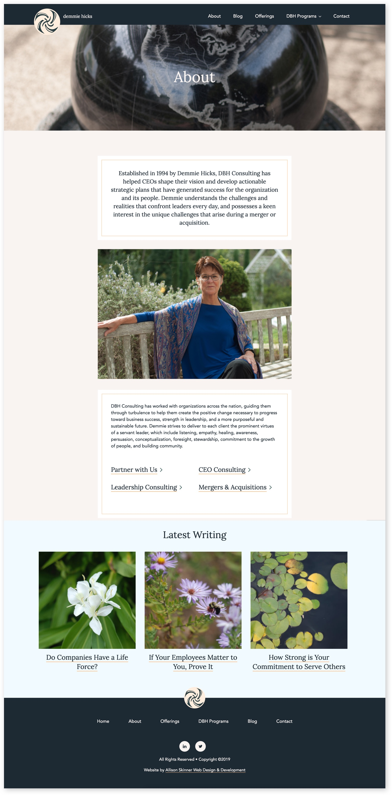
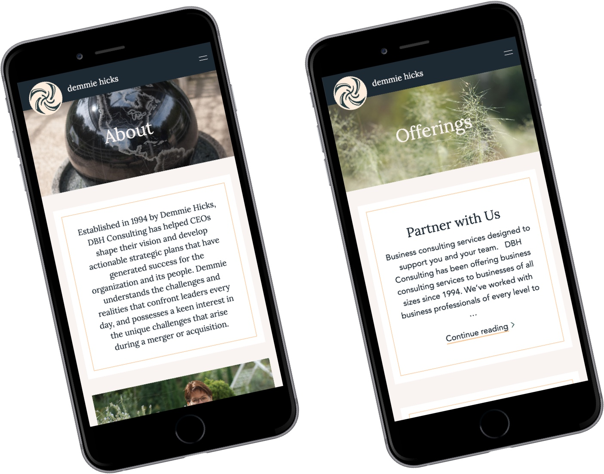
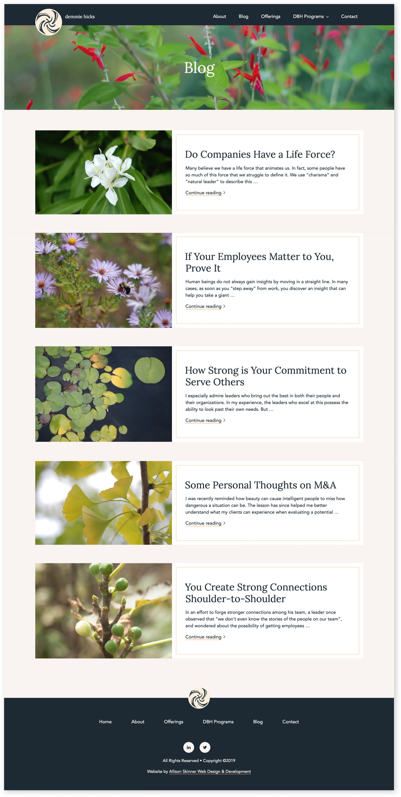
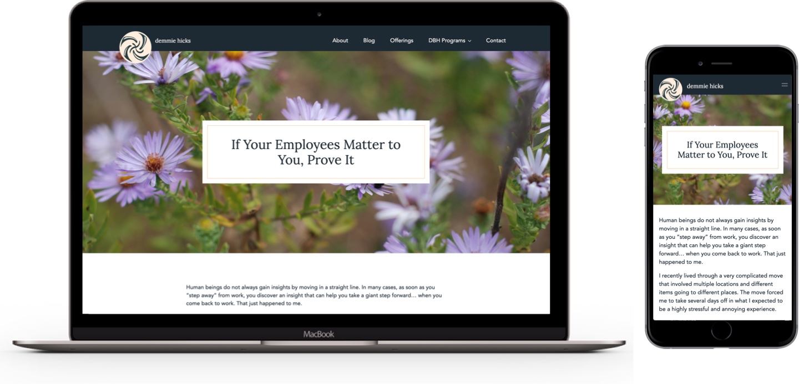

For Demmie Hicks’ consulting website, I had the priviledge to collaborate with other independent professionals in my network for logo design and photography.
Meredith Elder provided the logo design for Demmie Hicks.
Tatim Kilosky provided the photography for Demmie Hicks.

When I started the design for Demmie Hicks’ website, I took inspiration from the already completed logo design and photography for the project. Demmie Hicks wanted the website to combine a masculine and feminine energy in a natural way. I achieved this through a color scheme that did not feature stark white or black, but, rather, colors you could find in nature: ink-filled navy, light beige, orange gold and jade green.

For a consultant or speciality service website, establishing trust with your site visitors is very important. Demmie Hicks’ website needed to establish that she is a professional consultant with over 25 years of experience. The copywriting provides the primary information on her expertise, so I made sure the copywriting was easily legible through intentional typography and page layout.

As with every website I build, Demmie Hicks’ website is responsive for every device: mobile, tablet, laptop and desktop.

Every page on Demmie Hicks’ site is rich with photography. Many natural events serve as metaphors in Demmie Hicks’ work, the cyclical seaons, regrowth, the fluidity and strength of water.

Demmie Hicks’ establishes herself as an expert on her website through her blog. Demmie Hicks’ blog touches on the recurring questions and conflicts she addresses in her work. For the website, I provided a custom templates for her blog posts. The design makes her writing shine!

Working with Demmie Hicks was unique and rewarding experience because she is a professional that is concerned about the heart of everything. She wanted the website to capture her energy above all else, and I was proud to deliver that for her.
